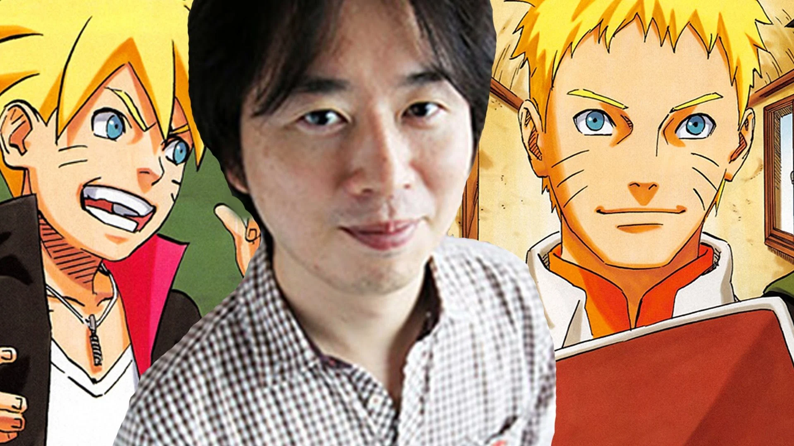
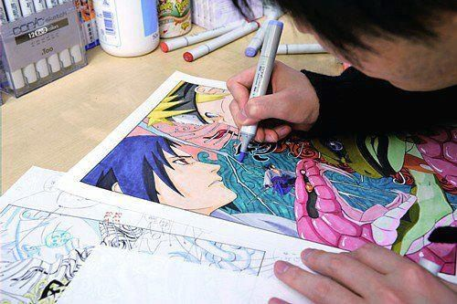
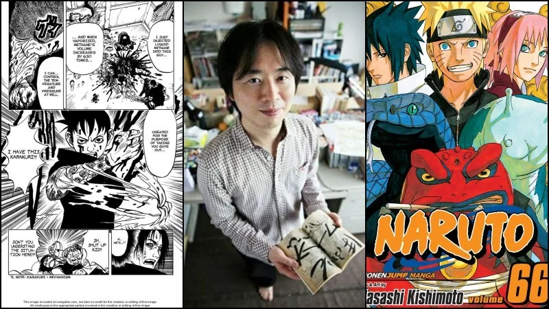

Masashi Kishimoto
Masashi Kishimoto (岸本斉史, Kishimoto Masashi) nasceu dia 08 de novembro de 1974 na prefeitura de Okayama no Japão, é o criador e autor do popular mangá e anime Naruto. Ele estreou como mangaká com seu trabalho Karakuri, que foi submetido a Shueisha em 1996. A partir de 1999, seu próximo trabalho, Naruto foi serializado na revista semanal Shonen Jump. Kishimoto recebeu o prêmio Hop Step, que é dado a novos artistas uma vez por mês da Shonen Jump. Ele também diz que foi fortemente influenciado pela série Dragon Ball e seu criador, Akira Toriyama.
Seu irmão gêmeo, Seishi Kishimoto, também é um mangaká e criador de 666 Satan e Drive Blazer. Sua arte tem sido comentada como sendo muito semelhante e várias acusações de plágio foram feitas, ou que Seishi tinha copiado seu irmão, ou vice-versa. No entanto, Seishi observa em um dos volumes de seus mangás que as semelhanças não são intencionais e que a ocorrência teria sido provável, porque tanto ele quanto Masashi foram influenciados por muitas das mesmas coisas. Masashi Kishimoto publicamente rejeitou essas acusações em seu próprio mangá.
Em suas entrevistas e exclusivamente no mangá de Naruto, ele normalmente menciona sua planta falecida, "Ukki-kun".De acordo com Kishimoto, a primeira vez que ele teve uma planta no escritório, devido à falta de atmosfera natural, ele se alimentou de alimentos vegetais diluídos. Ele continuou comprando várias outras plantas depois, mas muitas delas morreram.